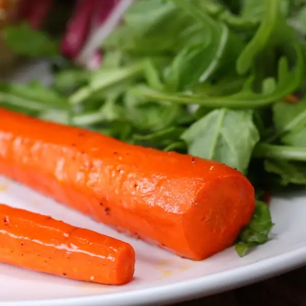

Glazed Carrots

Description
These glazed carrots are so quick and easy to make!
Just 10 minutes prep and 10 minutes in the oven, you have a wonderful
batch of glazed carrots for the whole family to enjoy!
Ingredients
- Carrots
- Brown Sugar
- Butter
How to Make Glazed Carrots
- BOIL. Add 1/2 inch water to an oven-safe skillet over medium heat. Boil carrots for 3 to 5 minutes.
- COAT. Drain the water and then add in the butter and sugar. Stir until coated. Sprinkle with salt and pepper.
- ROAST. Place carrots in the oven and roast 10-15 minutes, or until fork tender and the sugar has caramelized. Alternatively, you can keep cooking them in the pan until tender.